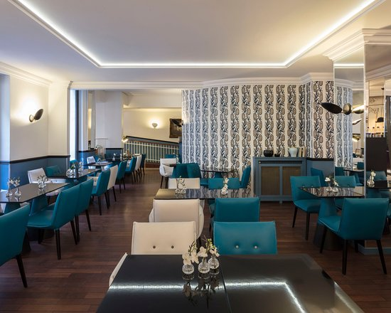
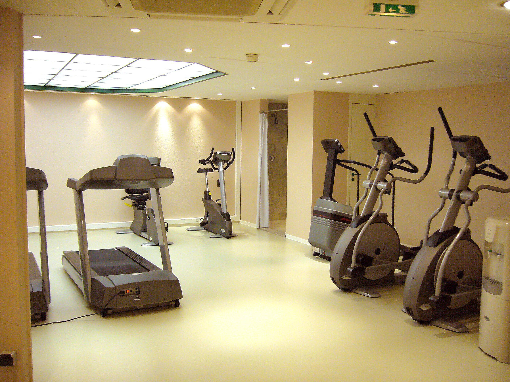
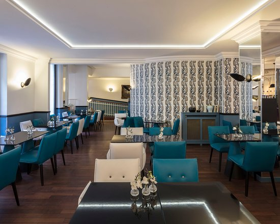
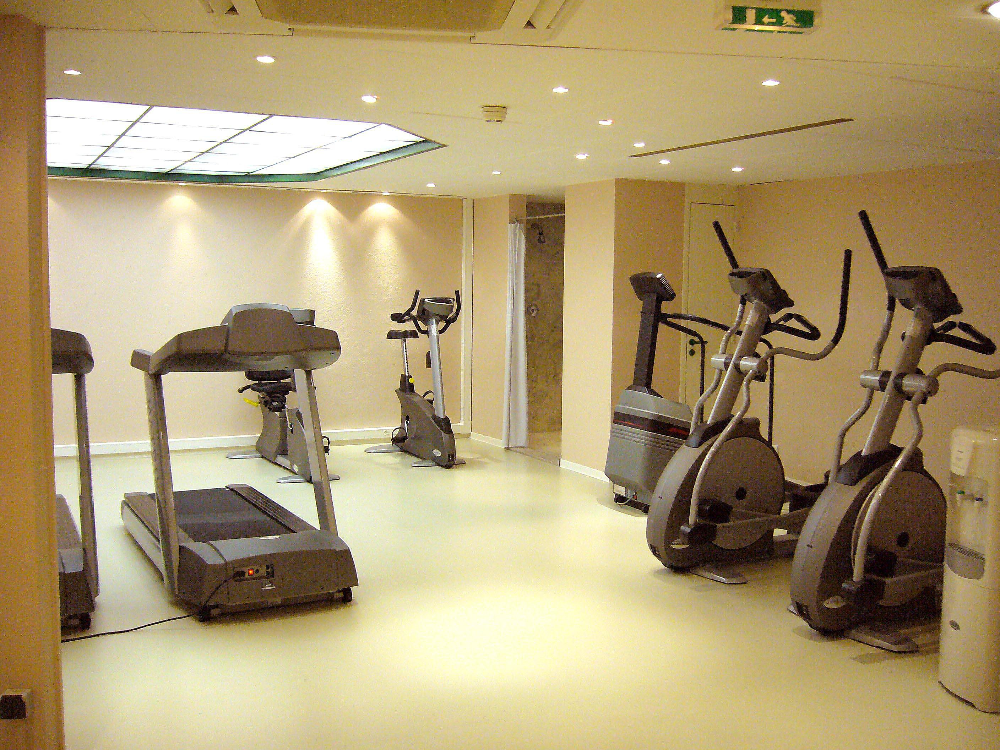

Aire acondicionado en zonas comunes
Wi-Fi gratis en zonas comunes
Piscina
Estacionamiento gratis
Gimnasio
Servicio de spa
Playa Tortugas
Acuario Interactivo de Puerto Plata
Parque de las Palapas
El Cancun Bay Hotel está situado en Playa Tortugas, a 6,5 km del Parque Urbano Kabah, a 15 km de Playa Delfines y a 22 km del Aeropuerto Internacional de Republica Dominicana. Ofrece asistencia turística y piscina al aire libre.
• Algunos huéspedes consideran que la señal Wi-Fi dentro del hotel podría ser mejor.
El hotel cuenta con el restaurante El Faisán, que sirve desayuno tipo buffet incluído en la tarifa, así como almuerzo y cena bajo el régimen todo incluido. Los bares Piña Colada y Faisán brindan cocteles y bebidas selectas.
• A 3 km del Puerto de Ultramar.
• El Hotel Cancun Bay se ubica a 9,5 km del Acuario Interactivo.
• A 22 km de Isla Mujeres.